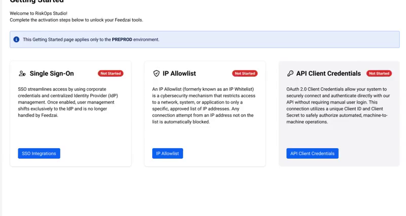
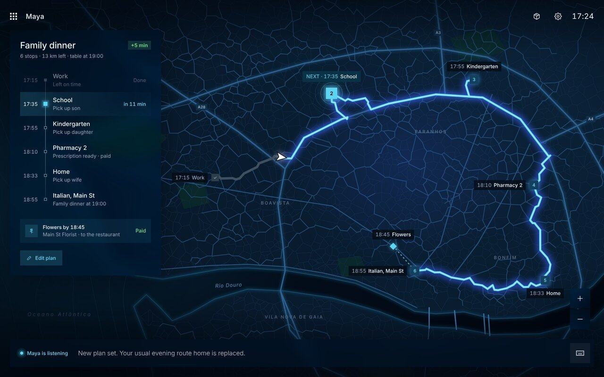
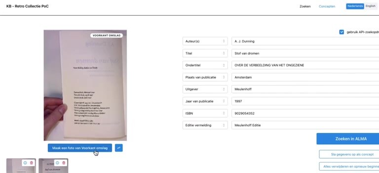
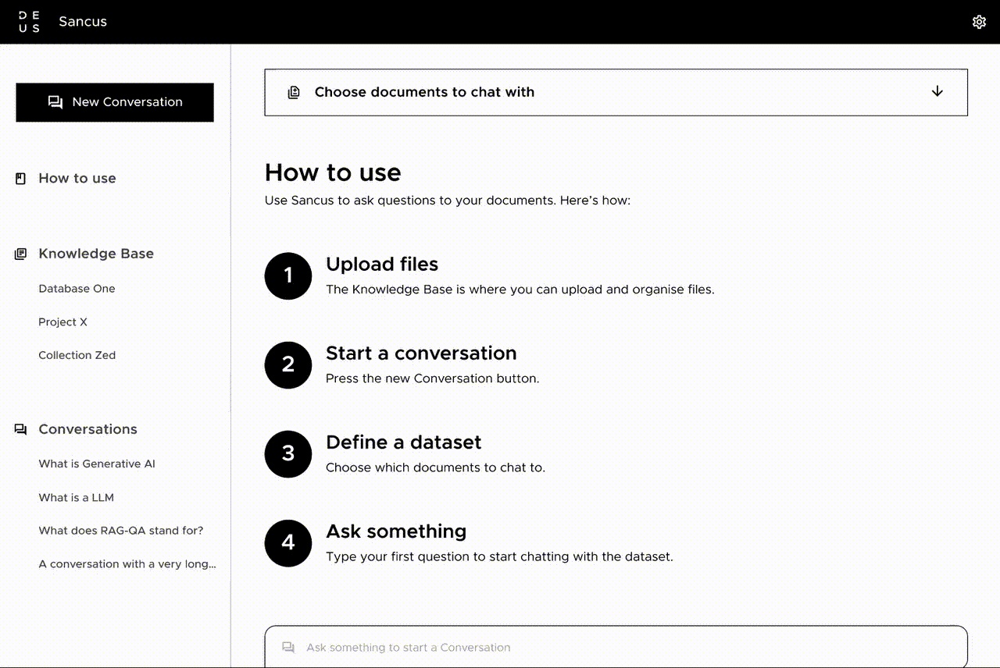
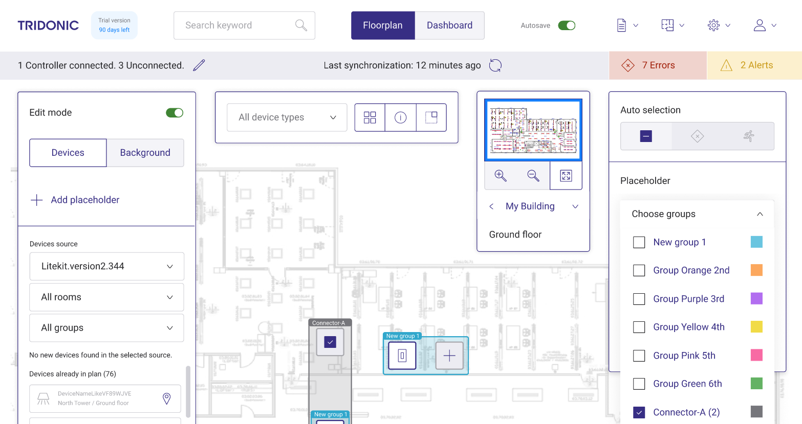
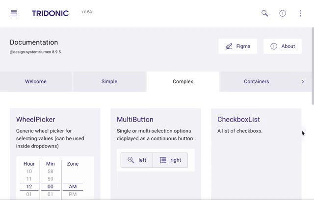
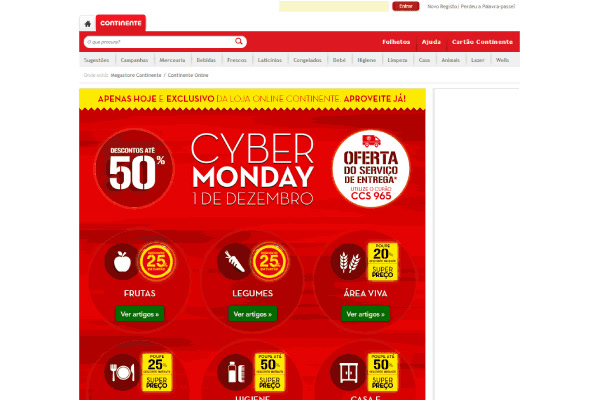
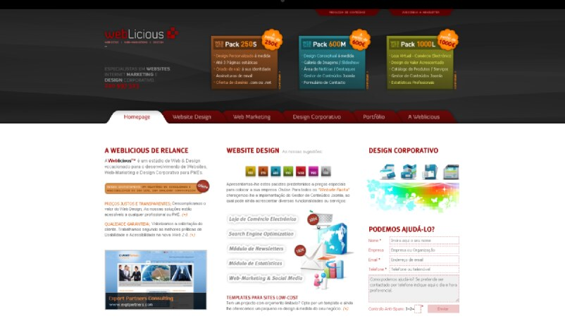

Aníbal Oliveira
Senior UX Product Designer and certified Product Owner. Twenty years designing AI, IoT, cloud and e-commerce products, from discovery to delivery.
Based in Porto, Portugal, working remotely. Portuguese and English.
Selected work
-

Feedzai RiskOps Studio
Onboarding banks onto a new self-service fraud-prevention tier: a service blueprint and the three set-up features a bank meets first.
-

Maya, L5 Trip Concierge
An AI concierge for a self-driving car that plans the stops, phones the shops, replans on the way and sends the empty car on errands.
-

KB RetroTool
Cataloguing time per book cut by 40–50% for the National Library of the Netherlands, with OCR and AI matching cataloguers can check.
-

Sancus AI
Ask your company's documents a question and get an answer with the sources to check it.
-

Shell Mobility offers
A self-service tool for loyalty offers and partners: partner onboarding went from 100 days to 10 minutes.
-

lichtMONITOR
Commissioning and monitoring smart lighting from a floor plan, from placing devices to finding faults.
-

Tridonic Design System
More than 200 one-off components across 15 apps replaced by one versioned design system, still shipping years later.
-

Continente Online
Growth for an online supermarket: checkout completion from 25% to 30%, 28% better 90-day retention, and 200+ campaigns.
-

WebLicious
My own web studio: websites and marketing for more than 50 clients in Portugal and the UK, sold as three fixed packs.